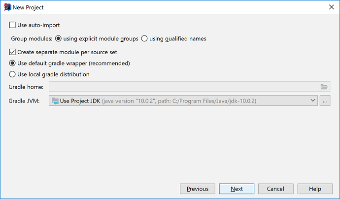

Objectives
Introduction to Kotlin and the IntelliJ IDEA.
HelloWorld
New Project in IntelliJ
Open IntelliJ (it is installed on the college computers).
From the Welcome to IntelliJ IDE screen, choose Create New Project.
On the New Project screen, choose Gradle in the left column (don't select Kotlin or Java).
Under Additional Libraries and Frameworks, check both Java and Kotlin (Java). Click the Next button.
Enter the following details and click the Next button:
Check the following options are selected and then click the Next button:

Choose a location for your project and click the Finish button:

Gradle will start downloading required dependencies. When this is finished, you should have the following project structure:

Note that all of our Kotlin files will be kept in the kotlin directory above and, likewise, the Java files will be kept in the Java directory.
New Kotlin Class
Right click on the src/main/kotlin directory and, when the context menu appears, select New followed by Kotlin Class/File.
When the window appears, enter the class name in the format of packagename.classname i.e.:
Enter the following code into this new file:
fun main(args: Array<String>){
println("Hello World")
}...and then run it. You should have the following output:
Save your work.
Types Project
Kotlin has two keywords used to declare variables, val and var:
- val creates an immutable declaration. Use this keyword when the value of the declaration won't change once set. Use this one whenever possible.
- var is used for a mutable declaration i.e. value can change.
In this project, we will familiarise ourselves with creating variables, kotlin types and type inference
New Project in IntelliJ
In IntelliJ, create a new project. When the New Project window appears, remember to choose:
- Gradle and
- under Additional Libraries and Frameworks, check both Java and Kotlin (Java).
Use the following credentials for your new project:
and ensure that the chosen location for your project is ok:

Gradle will start downloading required dependencies.
New Kotlin Class
Right click on the src/main/kotlin directory and, when the context menu appears, select New followed by Kotlin Class/File.
When the window appears, enter the class name in the format of packagename.classname i.e. com.wit.types.main and click ok.
Enter the following code into this new file:
fun main(args: Array<String>){
println("Working with Variables and Types")
}...and then run it. You should have the following output:

We are now ready to start experimenting with variables and types.
Basic Types (no type inference)
In this section, we would strongly advise typing in the supplied code so you can familiarise yourself with the Kotlin syntax.
The following code explicitly defines the type for 6 different immutable variables. Type this code into your main function:
val doubleNumber: Double = 1200.45
val floatNumber: Float = 700.78f
val longNumber: Long = 98765432
val intNumber: Int = 123456
val shortNumber: Short = 345
val byteNumber: Byte = 127And then add the following lines of code:
println("doubleNumber value is: " + doubleNumber + ", and the type is: " + doubleNumber.javaClass)
println("floatNumber value is: " + floatNumber + ", and the type is: " + floatNumber.javaClass)
println("longNumber value is: " + longNumber + ", and the type is: " + longNumber.javaClass)
println("intNumber value is: " + intNumber + ", and the type is: " + intNumber.javaClass)
println("shortNumber value is: " + shortNumber + ", and the type is: " + shortNumber.javaClass)
println("byteNumber value is: " + byteNumber + ", and the type is: " + byteNumber.javaClass)When you run the code, you can clearly see that the kotlin type matches with the Java primitive type, which matches with the explicitly declared type:

Basic Types (with type inference)
Now remove the type declaration from the above code (we will now infer the type from the value supplied at variable declaration time) i.e.:
val doubleNumber = 1200.45
val floatNumber = 700.78f
val longNumber = 98765432
val intNumber = 123456
val shortNumber = 345
val byteNumber = 127Run the code again and note the new inferred types...can you now see what the purpose of the f is in the value for floatNumber:

Update the definition for the longNumber variable to be:
val longNumber = 98765432LAnd run the code again. Verify that the inferred type is now long.
Values with Underscores
You can use underscores in numbers to make the values in your code more readable. The underscores do not affect the value at all. Try this code in your main function:
println("\nUsing underscores to make values more readable:")
val oneMillion = 1_000_000
val threeThousand = 3_000
val creditCardNumber = 1234_4321_5678_8765
println("\t" + oneMillion + " - the type is: " + oneMillion.javaClass)
println("\t" + threeThousand + " - the type is: " + threeThousand.javaClass)
println("\t" + creditCardNumber + " - the type is: " + creditCardNumber.javaClass)When you run it, note how the value printed excludes the underscores. Also note the inferred type for each variable. Why do you think long was selected instead of int for the variable creditCardNumber.
Save your work...we will continue working on this project in the next step!
Types Project (contd)
Numbers: Implicit Conversions
In Kotlin, there are no implicit widening conversions for numbers i.e. smaller types (e.g. Byte) are not subtypes of bigger ones (e.g. Int)
In the main function of the types project, try this code out now:
val byteNum: Byte = 10 //static type check: OK
val intNum: Int = byteNum //syntax errorNumbers: Explicit Conversions
In Kotlin, you need to use explicit concversions to widen numbers! Eliminitate the above syntax error by making the following code change:
val byteNum: Byte = 10 //static type check: OK
val intNum: Int = byteNum.toInt() //explicit conversion: OKEach number type supports explicit number conversions. Let's try another few conversions:
val floatNum: Float = byteNum.toFloat()
val doubleNum: Double = intNum.toDouble()For each of the variables above, print out the value and also the type. Ensure that the types are what you were expecting.
Character types
todo
Boolean types
todo
val vs var
In the previous steps, we used val to create our variables. In this step, we will look at var and uncover the difference between the two.
todo
functions
todo
Exercise
Exercise 1: Placemaker app
todo...create a new placemaker app that displays a console menu (prototype...no engine behind the options...will add engine next week when we look at control flow).